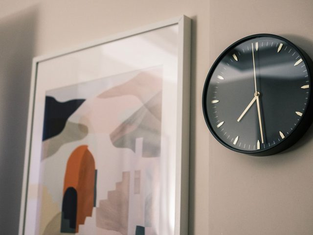
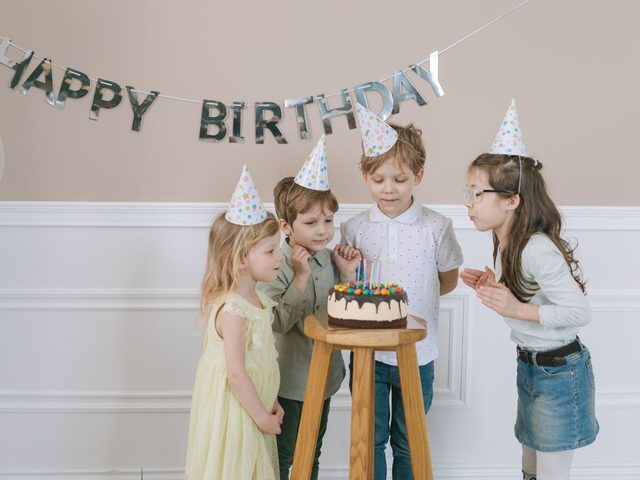
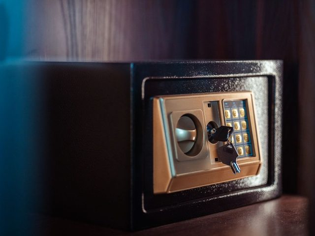
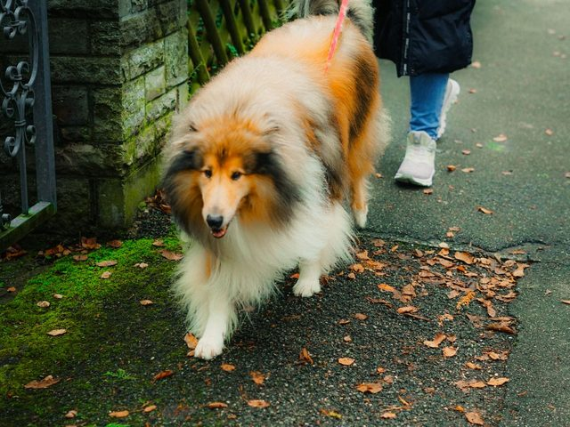
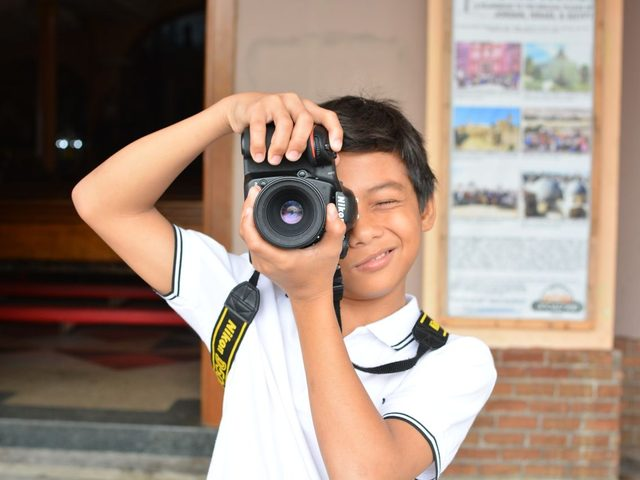
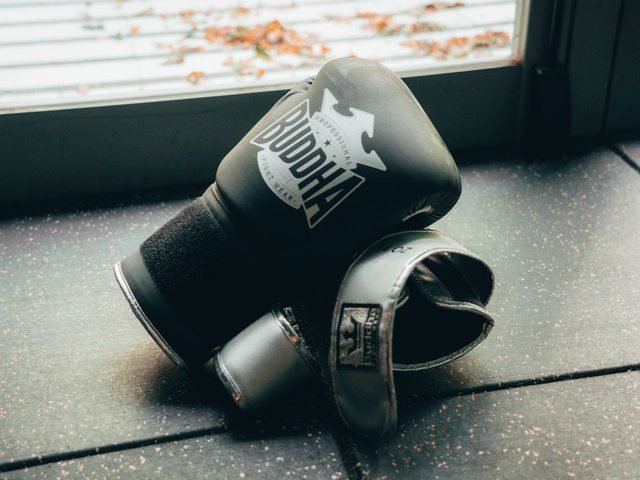
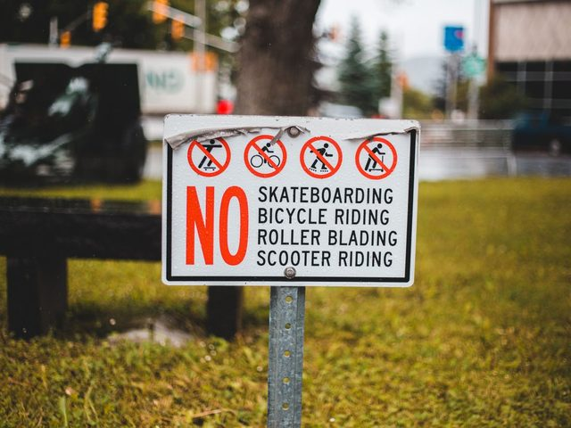

LALA WORD · UNIT 2
一字多義（二）
The Secret Clothes of Animals
22 個單字一字多義
本單元單字一覽
變色龍會「turn」green（變成綠色），不是「轉」綠色；party 除了派對還有「政黨」，fan 除了「粉絲」還是「電扇」。這個單元有 8 個主題單字、14 個更多單字，最後整理容易搞混的 look／watch／see／read。
timeturnmagicpartyusesafewalkpictureallbandcanclassfanfightfreehandplacepleaseruleshakestudywith
每個字先聽 🔊，再一個意思一個意思看例句。
1. time 主題單字．6 個意思

time
time - timed - timed - timing
n.時間；時光time flies 時光飛逝；take your time 慢慢來
Time flies when you are having fun.
玩得開心時，時間過得特別快。
n.時刻；幾點Do you have the time? 現在幾點？
What time does the movie start?
電影幾點開始？
n.（做某事的）時候It's time to… 該…了；on time 準時；in time 及時
It's time to go to bed.
該上床睡覺了。
n.次；次數last time 上一次；next time 下一次
I have been to Tainan three times.
我去過臺南三次。
v.計時
Can you time me when I swim?
我游泳的時候你可以幫我計時嗎？
prep.乘以（times）
Three times four is twelve.
三乘以四等於十二。
2. turn 主題單字．5 個意思

turn
turn - turned - turned - turning
v.變成
The leaves turn yellow in autumn.
秋天葉子變黃了。
v.扭動（開關）turn on 打開；turn off 關掉
Please turn off the lights when you leave.
離開時請關燈。
v.（使）轉身；轉向
She turned and smiled at me.
她轉過身對我微笑。
n.轉彎make a right / left turn 右轉／左轉
Make a left turn at the bank.
在銀行那裡左轉。
n.輪到的機會take turns + V-ing 輪流
It's your turn to clean the board.
輪到你擦黑板了。
3. magic 主題單字．3 個意思

magic
n.魔法；魔術work like magic 效果神奇
The witch used magic to turn the frog into a prince.
女巫用魔法把青蛙變成王子。
n.魅力；神奇的力量
I love the magic of the night market.
我愛夜市那種迷人的魅力。
adj.有魔力的；魔術的magic trick 魔術
My uncle can do a magic trick with cards.
我叔叔會用撲克牌變魔術。
4. party 主題單字．3 個意思

party
party - partied - partied - partying；複數 parties
n.派對；社交聚會have / throw a party 辦派對
We are going to have a party for Mom's birthday.
我們要為媽媽的生日辦一個派對。
n.政黨
Which party will win the election?
哪一個政黨會贏得選舉？
v.狂歡；開派對
After the final exam, the students partied all night.
期末考完後，學生們狂歡了一整晚。
5. use 主題單字．5 個意思
use
use - used - used - using
v.使用use up 用完
May I use your phone?
我可以用你的手機嗎？
v.利用（別人）
He is not your friend. He is just using you.
他不是你的朋友，他只是在利用你。
v.說；寫（語言、字詞）
Don't use bad words.
不要說髒話。
n.使用out of use 停用；make use of 利用
The elevator is out of use today.
電梯今天停用。
n.用途
Bamboo has many uses.
竹子有很多用途。
6. safe 主題單字．4 個意思

safe
safe - safer - safest；副詞 safely
adj.安全的
It's not safe to swim in this river.
在這條河游泳不安全。
adj.可靠的；謹慎的
Dad is a safe driver.
爸爸開車很謹慎。
adj.平安的；沒受傷的safe and sound 安然無恙
The lost boy came home safe and sound.
走失的男孩平安無事地回家了。
n.保險箱
Grandma keeps her gold in a safe.
奶奶把她的金子放在保險箱裡。
7. walk 主題單字．4 個意思

walk
walk - walked - walked - walking
v.走路；步行walk away 走開
I walk to school every day.
我每天走路上學。
v.遛（狗）
It's my job to walk the dog after dinner.
晚餐後遛狗是我的工作。
n.散步go for / take a walk 散步
Let's go for a walk in the park.
我們去公園散步吧。
n.步行的路程
The MRT station is a ten-minute walk from here.
捷運站離這裡走路十分鐘。
8. picture 主題單字．4 個意思

picture
picture - pictured - pictured - picturing
n.圖畫draw a picture of 畫一張…的圖
Kevin drew a picture of his family.
Kevin 畫了一張他家人的圖。
n.照片take a picture 拍照
Can you take a picture of us?
你可以幫我們拍一張照片嗎？
n.情況；了解get the picture 了解情況
OK, I get the picture now.
好，我現在懂了。
v.想像
Picture yourself on a sunny beach.
想像你自己在陽光燦爛的海灘上。
9. all 更多單字．2 個意思

all
pron.全部；所有all day 整天；all the time 一直
All of my friends came to my party.
我所有的朋友都來參加我的派對。
adv.完全地all alone 孤零零地；not… at all 一點也不
The dog got mud all over its body.
狗弄得全身都是泥巴。
10. band 更多單字．2 個意思

band
複數 bands
n.樂團
My cousin plays the drums in a band.
我表哥在樂團裡打鼓。
n.帶子；橡皮筋rubber band 橡皮筋
She tied her hair with a rubber band.
她用橡皮筋綁頭髮。
11. can 更多單字．6 個意思

can
助動詞過去式 could；動詞 can - canned - canned - canning
aux.能；會
Can you ride a bike?
你會騎腳踏車嗎？
aux.可以（允許）
You can go out after you finish your homework.
寫完功課你就可以出去。
aux.可以…嗎（請求）
Could you pass me the salt?
可以請你把鹽遞給我嗎？
aux.有可能
It can be very cold here in winter.
這裡冬天可能會很冷。
n.罐頭；金屬罐
Please put the empty cans in the recycling bin.
請把空罐子放進回收桶。
v.把…裝罐
This factory cans tuna.
這家工廠生產鮪魚罐頭。
12. class 更多單字．4 個意思

class
複數 classes
n.班級；全班同學
There are 28 students in our class.
我們班有 28 個學生。
n.課；課程
We have a P.E. class this afternoon.
我們今天下午有體育課。
n.（車、機艙）等級
It costs a lot to fly first class.
搭頭等艙很貴。
n.社會階級
Many people in the working class work long hours.
許多勞工階級的人工時很長。
13. fan 更多單字．3 個意思

fan
fan - fanned - fanned - fanning
n.狂熱愛好者；迷a big fan of 是…的大粉絲
My sister is a big fan of that singer.
我姊姊是那位歌手的超級粉絲。
n.扇子；電風扇
It's hot. Can you turn on the fan?
好熱。你可以開電風扇嗎？
v.搧（風）
She fanned her face with a book.
她用書搧臉。
14. fight 更多單字．2 個意思

fight
fight - fought - fought - fighting
v.打架；吵架；打仗fight against 對抗；fight for 爭取
My two little brothers often fight over toys.
我的兩個弟弟常常為了玩具吵架。
n.打鬥；戰鬥
Two cats had a fight in the yard.
兩隻貓在院子裡打了一架。
15. free 更多單字．5 個意思
🆓
free
free - freed - freed - freeing
adj.免費的
The drinks are free today.
今天飲料免費。
adj.有空的free time 空閒時間
Are you free this Sunday?
你這個星期天有空嗎？
adj.自由的feel free to 儘管
The bird is free now. It can fly anywhere.
這隻鳥現在自由了，牠可以飛到任何地方。
adj.沒有…的free of / from 沒有…的
This cake is sugar-free.
這個蛋糕不含糖。
v.釋放
They freed the fish back into the sea.
他們把魚放回海裡。
16. hand 更多單字．4 個意思
hand
hand - handed - handed - handing
n.手；（鐘錶的）指針
The hour hand is on the six.
時針指在六。
n.幫忙give / lend + 人 + a hand 幫忙
Can you give me a hand with these boxes?
你可以幫我搬這些箱子嗎？
n.掌聲give a big hand 鼓掌
Let's give her a big hand!
我們給她熱烈的掌聲！
v.遞給；交hand in 繳交
Please hand in your homework tomorrow.
請明天交作業。
17. place 更多單字．5 個意思

place
place - placed - placed - placing
n.地點；地方
This is a nice place for a picnic.
這是野餐的好地方。
n.名次
Amy won first place in the race.
Amy 賽跑得第一名。
v.放置
Place the cup on the table, please.
請把杯子放在桌上。
v.舉行；發生（take place）take place 舉行；發生
The concert will take place in the park.
音樂會將在公園舉行。
v.下（訂單）place an order 下訂單
I placed an order for two pizzas.
我訂了兩個披薩。
18. please 更多單字．3 個意思

please
please - pleased - pleased - pleasing
int.請；拜託
Please close the door.
請關門。
int.好的，謝謝（接受時）
A: More juice? B: Yes, please.
A：還要果汁嗎？ B：好，謝謝。
v.使高興；取悅
It's hard to please everyone.
要讓每個人都滿意很難。
19. rule 更多單字．4 個意思

rule
rule - ruled - ruled - ruling
n.規則；習慣follow / break the rules 遵守／違反規則；make it a rule to 習慣
Don't break the school rules.
不要違反校規。
n.經驗法則（a rule of thumb）a rule of thumb 經驗法則
As a rule of thumb, drink eight glasses of water a day.
一般來說，一天要喝八杯水。
v.統治
The king ruled the country for forty years.
國王統治這個國家四十年。
v.支配；控制
Don't let your phone rule your life.
別讓手機控制你的生活。
20. shake 更多單字．4 個意思

shake
shake - shook - shaken - shaking
v.搖動；震動shake one's head 搖頭；shake hands 握手
The house shook during the earthquake.
地震時房子在搖晃。
v.發抖shake like a leaf 抖個不停
He was shaking with cold.
他冷得發抖。
v.擺脫（shake off）shake off 擺脫
I can't shake off this cold.
我這個感冒一直好不了。
n.奶昔
I'd like a chocolate shake, please.
我要一杯巧克力奶昔。
21. study 更多單字．4 個意思
study
study - studied - studied - studying；複數 studies
v.讀書；學習
She is studying for the test.
她在準備考試。
v.仔細研究
The scientist studies how bees talk to each other.
這位科學家研究蜜蜂怎麼互相溝通。
n.研究；調查
A new study shows that sleep helps memory.
一項新研究顯示睡眠有助於記憶。
n.書房
Dad is reading in his study.
爸爸在書房看書。
22. with 更多單字．5 個意思

with
prep.和…一起
I went to the zoo with my cousins.
我和表兄弟姊妹去動物園。
prep.用（工具）
He cut the paper with scissors.
他用剪刀剪紙。
prep.有；帶著
Who is the girl with long hair?
那個長頭髮的女孩是誰？
prep.對於
Be careful with the knife.
用刀子要小心。
prep.支持；站在…這邊
Don't worry. I'm with you.
別擔心，我支持你。
易混淆字：都是「看」，有什麼不同？
| 單字 | 用法 | 例句 |
|---|---|---|
| look | 有意地把視線轉過去，常接 at；也可以當「看起來」＋形容詞 | Look at the rainbow!／You look tired. |
| watch | 專注地看一段時間（電視、比賽、會動的東西） | We watched a baseball game on TV. |
| see | 不是刻意去看，自然「看到」；也表示「看得見」 | I saw a cat on the roof.／I can't see the board. |
| read | 看「文字」並了解意思（書、報紙、標誌）；也可以讀出別人的心思 | She reads the news every morning. |
watch、see 後面可以接「受詞＋原形動詞／V-ing」：I saw him cross the street.／We watched the kids playing.
一字多義：最常見 vs. 容易忽略的意思
| 單字 | 最常見的意思 | 容易忽略的意思 |
|---|---|---|
| turn | 轉彎；轉動 | 變成；輪到 |
| party | 派對 | 政黨 |
| safe | 安全的 | 保險箱 |
| can | 能；會 | 罐頭 |
| fan | 粉絲 | 電扇；搧風 |
| free | 免費的 | 有空的；不含…的 |
| hand | 手 | 指針；幫忙；掌聲 |
| shake | 搖動 | 奶昔 |
| study | 讀書 | 書房；研究 |
常用片語
| 片語 | 意思 | 例句 |
|---|---|---|
| take turns + V-ing | 輪流 | We take turns washing the dishes. |
| take place | 舉行；發生 | The game took place last Friday. |
| give + 人 + a hand | 幫某人忙 | Can you give me a hand? |
| hand in | 繳交 | Hand in your test papers now. |
| feel free to | 儘管… | Feel free to ask questions. |
| safe and sound | 安然無恙 | They got home safe and sound. |
| out of use | 停用 | This old road is out of use. |
快問快答：這句的 粗體字 是什麼意思？
1Three times four is twelve.乘以（times）
2It's your turn to clean the board.輪到的機會
3My uncle can do a magic trick with cards.有魔力的；魔術的
4After the final exam, the students partied all night.狂歡；開派對
5Bamboo has many uses.用途
6Grandma keeps her gold in a safe.保險箱
7The MRT station is a ten-minute walk from here.步行的路程
8Picture yourself on a sunny beach.想像
快問快答：這句的 粗體字 是什麼意思？
1The dog got mud all over its body.完全地
2She tied her hair with a rubber band.帶子；橡皮筋
3This factory cans tuna.把…裝罐
4Many people in the working class work long hours.社會階級
5She fanned her face with a book.搧（風）
6Two cats had a fight in the yard.打鬥；戰鬥
7They freed the fish back into the sea.釋放
8Please hand in your homework tomorrow.遞給；交
學完了！接下來
複習方法
review
- 回到「📗 單字卡」，按「遮中文」，看例句說出每個意思
- 特別記「容易忽略的意思」（例如 pen 圍欄、ball 舞會）
- 每個例句跟著 🔊 唸一次
準備好了
- 按右上角「📝 前往測驗」
- 測驗錯的題目要訂正到全對
- 訂正完成補送 1 點